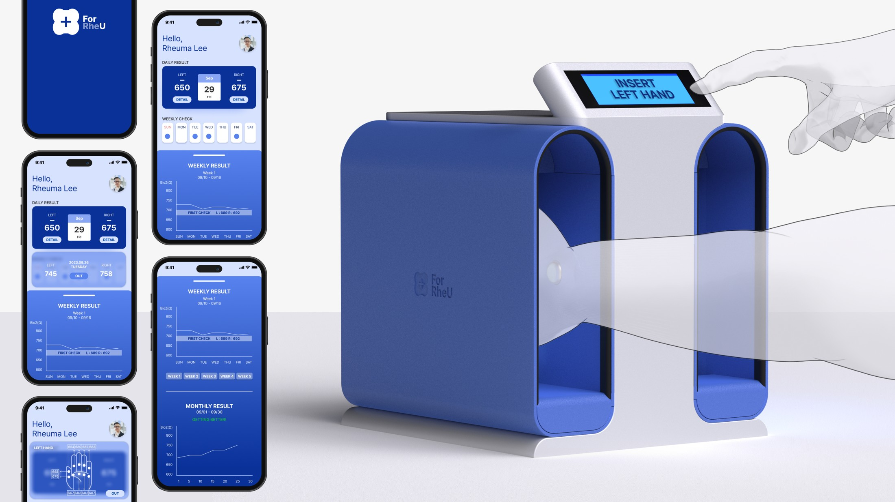

3D MEMS/NEMS
Stacked MEMS &
Coupled mechanics
Diffusion-driven silicon morphogenesis and engineered membrane coupling for advanced sensing.
KAIST · MECHANICAL ENGINEERING · MNIL LAB
3D SILICON MORPHOGENESIS
Engineering the morphology of semiconductor materials to create diverse 3D architectures that are difficult to achieve through conventional fabrication.
AT THE INTERSECTION OF FABRICATION & MECHANICS
Exploring materials and geometry, and engineering mechanical interactions to detect the signals we seek.
3D MEMS/NEMS
Diffusion-driven silicon morphogenesis and engineered membrane coupling for advanced sensing.
NONDESTRUCTIVE TESTING & EVALUATION
Waveguides and conformal piezoelectric transducers for controlled guided-wave inspection of plates and cylindrical structures.
Explore guided-wave research
HEALTH MONITORING
A self-measuring device based on bioelectrical impedance analysis for rheumatoid arthritis monitoring.
Explore ForRheUADVANCED COMPOSITES AND HYBRID MATERIALSIF 21.8JCR Top 1.5%
JOURNAL OF THE KOREAN SOCIETY FOR NONDESTRUCTIVE TESTING
MECHANICAL SYSTEMS AND SIGNAL PROCESSINGIF 8.9JCR Top 3%
TRANSACTIONS OF THE KOREAN SOCIETY FOR NOISE AND VIBRATION ENGINEERING
2026.03 — PRESENT
Ph.D. Student · Mechanical Engineering
Advisor: Prof. Jungchul Lee
2024.03 — 2026.02
M.S. · Mechanical Engineering
Advisor: Prof. No-Cheol Park
2018.03 — 2024.02
B.S. · Mechanical and System Design Engineering
B.S. · Design Engineering
2024.03 — 2026.02
Korea Research Institute of
Standards and Science
Student Researcher
Non-Destructive Metrology Group
PI: Hong Min Seung, Ph.D.
대한기계학회 · LG전자
이정철, 정기범, 정주영, 민두홍
중공관 공진 질량센싱 기반 실시간 금속 부식 모니터링 및 잔여 수명 예측 기술
한국기계연구원
정주영
KIMM-CAD 및 KIMM-Structure를 활용한 온도–질량 교차감응 분리용 MEMS 공진기의 가상 설계·해석 및 상용 해석 프로그램과의 교차 검증
대한기계학회 · SEMES
정주영, 김태영
3D MEMS 공진센서 기반 온도–가스 분리 측정을 이용한 반도체 배기설비 스마트 진단 플랫폼
연세대학교
정주영
Master’s thesis: Cylindrical Waveguide Based Ultrasonic Transducer for Omnidirectional Shear-Horizontal Wave Generation
2026-1학기 기계공학과 대학원생 상위 4인 선정 · 총장 명의 수여
한국소음진동공학회
정주영, 김승일, 승홍민, 박노철
극한온도환경 구조물의 대면적 고속 초음파검사를 위한 높이확보형 트랜스듀서 개발 및 거동 분석
한국비파괴검사학회
정주영, 박노철, 승홍민
형상적응형 도파관 기반 곡면구조에서의 전방향 전단파 구현
한국소음진동공학회
정주영, 김승일, 승홍민, 박노철
원통형 발진기를 이용한 평판에서의 완벽한 원형 전단파 구현
한국비파괴검사학회
정주영
Draw the future of SAFETY with KSNT
대한기계학회
김승일, 정주영, 김민아, 류정호, 승홍민
마찰전기 나노발전기를 활용한 탄성파 측정
RESEARCH · IDEAS · COLLABORATION
Department of Mechanical Engineering
Korea Advanced Institute of Science and Technology
한국과학기술원 기계공학과 생산 및 계측 연구실